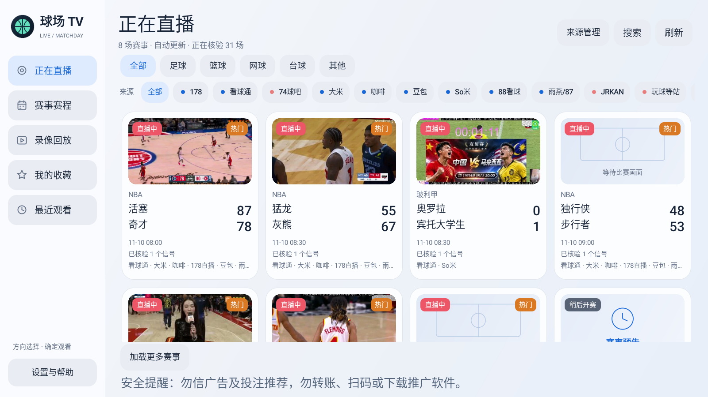

找比赛
用遥控器浏览赛事卡片，按日期、联赛或来源查看赛程，也可以直接搜索球队。

用遥控器浏览赛事卡片，按日期、联赛或来源查看赛程，也可以直接搜索球队。
同一场比赛的可识别来源集中显示。播放遇到问题时，可在播放器内切换线路。
收藏想看的赛事，从最近观看返回直播，也可以浏览部分来源提供的录像回放。
Android 5.0 及以上
适合常用电视和盒子。设备性能满足条件时，可开启 AI 画质增强。
下载标准版 APKAndroid 4.4 及以上
适合旧电视和低配置盒子，减少后台取图和播放缓冲的开销。
下载兼容版 APK将 APK 传到电视或盒子上安装。已安装的用户可在「设置与帮助 → 检查更新」升级。
作者 老网编 · 微博「老网编自留地」 · 知乎「老网编」 · 反馈问题
扫码加好友，备注「球场 TV」申请加入。扫码加不上时，可搜索 wangbianlaole。
如果球场 TV 对你有帮助，可以扫码自愿赞赏。